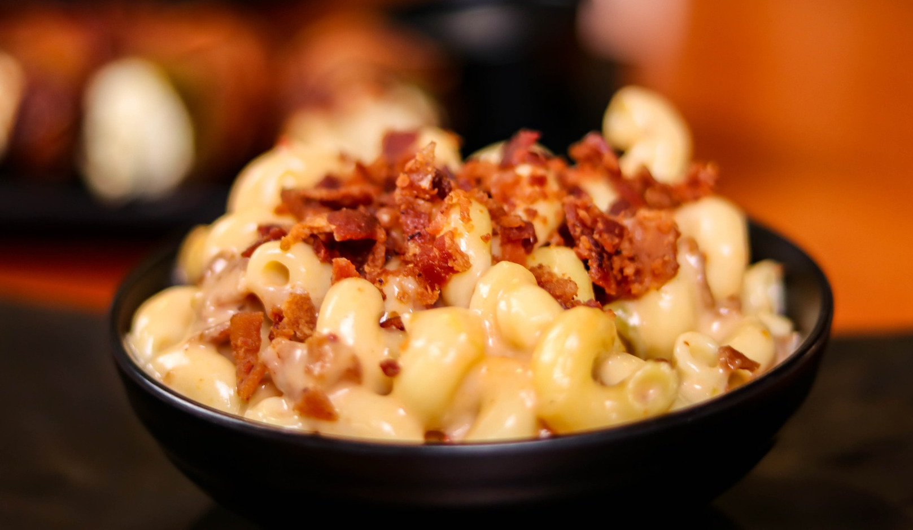

What is Mac and Cheese?
Mac and cheese is a dish of cooked macaroni pasta and a cheese sauce, most commonly cheddar. It can also incorporate other ingredients, such as breadcrumbs or meat. This meal takes an average of 30 mins to cook.
Ingredients for Mac and Cheese
- 1 box of elbow macaroni.
- 1/4 of a cup of butter.
- 1/4 of a cup of all-purpose flour.
- 1/2 of a teaspoon of salt.
- Ground black pepper to taste.
- 2 cups of milk.
- 2 cups of shredded Cheddar cheese (or any cheese that you like!)
Cooking Mac and Cheese
- Boil a large pot of lightly salted water.
- Put in elbow macaranoi to cook until it is firm to bite (around 8 minutes)
- Stir occasionally while it is cooked.
- Drain the pot when it is cooked.
- Heat a saucepan over a medium heat and put butter in to melt.
- Put flour, salt and pepper into the saucepan, and stir for about 5 minutes.
- Pour milk into the mixture slowly while stirring until the mixture smooth (around 5 minutes).
- Lastly, add Cheddar cheese to the mixture and stir until it is melted (2 to 4 minutes).
- Now, you can bring the cooked macaroni into the pan to be mix!
Simple isn't it? Enjoy your mac and cheese!
This recipe is taken from allrecipes.
Back To Homepage